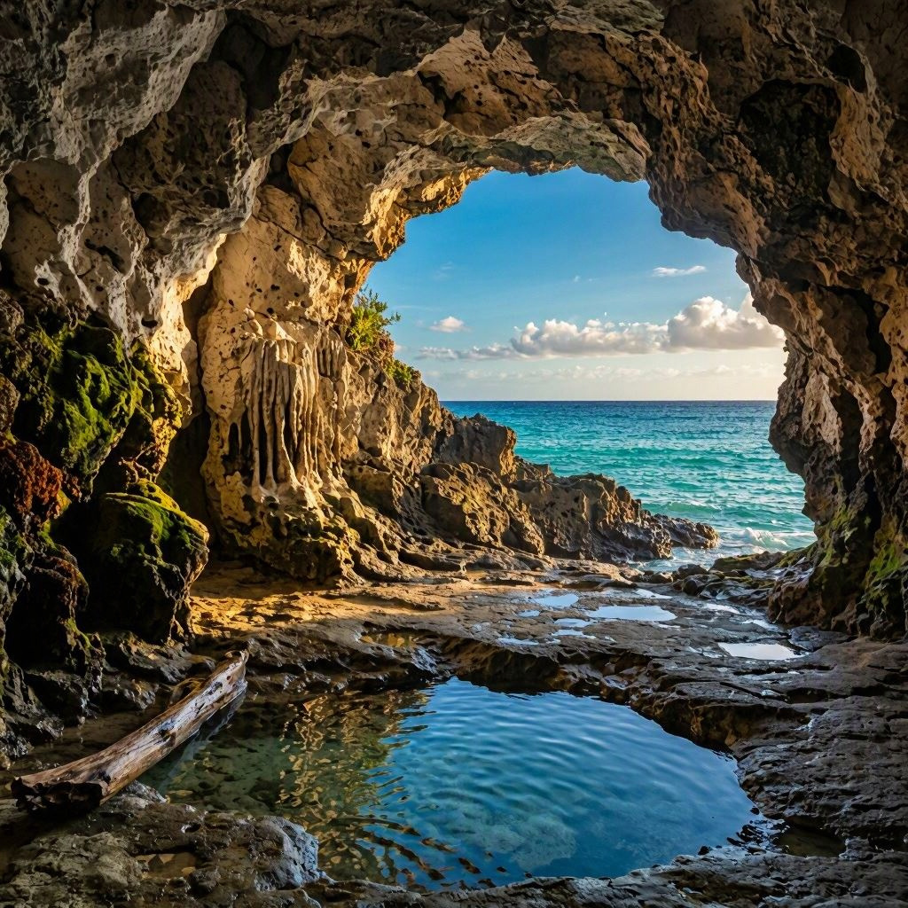
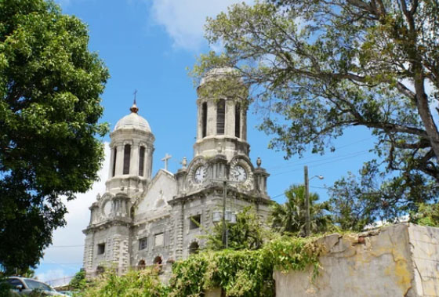

Discovery of the Caribbean Jewel
365 beaches—where every day greets you with a new paradise.
Experience the luxury of exploring 365 different white-sand beaches and turquoise coastlines all year round. The elegant historic heritage of the British Navy and the peaceful pink sands of Barbuda are waiting for you.
Journey across two unique paradises.
Two islands, countless stories. The Pearl of the Caribbean, Antigua and Barbuda.

The main island where history, luxury resorts, and vibrant seas converge.
Antigua is celebrated for its promise of a different beach for every single day of the year. From the colonial charm of St. John’s to the World Heritage-listed Nelson’s Dockyard and world-class international regattas, a sophisticated Caribbean resort life unfolds before you.

The serene and ethereal pink-sand beach
Located about 48 kilometers north of Antigua, this coral island rests as if gently resisting commercial tourism. Home to a miraculous 'Pink Sand Beach'—formed by the delicate blending of tiny red foraminifera shells—and one of the world’s premier bird sanctuaries, it offers a realm of true privacy and absolute serenity.
Nature's ultimate masterpieces.
Iconic Destinations
Step into a world of breathtaking wonders that define the Caribbean paradise. From endless pink sands to untouched natural sanctuaries, these iconic destinations offer unforgettable glimpses of the earth’s ultimate masterpieces.

Devil's Bridge
A dynamic sculpture of nature, where the fierce waves of the Atlantic have carved a dramatic arch out of the coral limestone.

Shirley Heights Lookout
The island's finest panoramic view, offering a magnificent and sweeping vista of the Caribbean Sea and English Harbour.

Half Moon Bay
Exquisite white sands forming a perfect crescent—a scenic masterpiece voted among the best beaches in the US and the entire Caribbean.
Explore Site →
Princess Diana Beach
The secluded retreat loved by the late Princess Diana, where a surreal pink sand beach stretches endlessly into the distance.

Frigatebird Sanctuary
A pristine sanctuary where over 5,000 wild birds soar, preserving the untouched, timeless beauty of Caribbean nature.

Darby Cave
A mystical, massive sinkhole enveloped in mystery, its depths lush with dense tropical flora and towering palm trees.
A journey through time and culture.
Heritage & Historic Highlights
Immerse yourself in the captivating blend of heritage and culture that shapes the island's unique identity. Walk through living history, grand architecture, and the spirited avenues that define our local life.

St. John's Cathedral
Dominating the city skyline with its majestic twin baroque towers, this historic cathedral stands as a proud symbol of the island's enduring spirit. Inside, its unique pitch-pine interior creates a beautiful sanctuary wrapped in colonial charm.
Fort James
Overlooking the vibrant waters of St. John's, Fort James stands as a powerful monument to the island’s colonial era. Explore the iconic ruins, touch the historic cannons, and capture unforgettable views where history meets the horizon.

Nelson's Dockyard
As the world’s only continuously working Georgian dockyard, this UNESCO World Heritage site beautifully preserves the golden age of sail. Today, its historic stone restored buildings house charming boutiques and restaurants, framed by luxury yachts swaying in the harbor.

Betty's Hope
Established in 1674, this historic sugar plantation stands as a profound monument to the island's colonial past. Today, its iconic, beautifully restored stone windmills offer travelers a quiet space for reflection and a deep journey into Caribbean heritage.
The Flavors of the Caribbean
A culinary journey through the sea, sun, and tradition. Savor fresh Caribbean seafood, tropical produce, and timeless recipes full of authentic island flavor.

Fungi & Pepperpot
Soft cornmeal and okra dumplings ("fungi") pair wonderfully with "pepperpot," a rich, slow-simmered, and mildly spicy meat and vegetable stew, creating a beloved national dish.

Spiced Curry Roti Wrap
A flawless wrap born from Indian culinary roots. Skilled chefs roll thin, flaky flatbread around a fragrant curry of cumin, coriander, chicken or beef, and tender potatoes.

Saltfish & Sweet Ducana
The ultimate sweet-and-savory marriage: savory salted cod sautéed with tomatoes and peppers meets 'ducana,' a sweet banana-leaf-steamed sweet potato cake.

Antigua Black Pineapple
Grown only in the island’s rich volcanic soil and abundant sunshine, this rare fruit features incredibly low acidity and a tender core. Its rich, honeyed aroma is a taste of the Caribbean sun itself.
アンティグア・バーブーダの歴史
Antigua and Barbuda
The nation’s timeline is defined by its indigenous roots, a colonial era of British rule, sugar plantations, and the transatlantic slave trade, leading to its modern evolution into a premier tourism-driven nation.
古代・先植民地期
先住民族の定住 （紀元前2400年頃～）
シボネイ族が最初に定住。後にアラワク族やカリブ族が渡来し、農業や漁業を営む
コロンブスの到達 （1493年）
クリストファー・コロンブスが第2回航海で来航。「アンティグア」の名を授けるが、水不足によりスペインは入植を断念。
植民地時代（近世）
イギリスの植民地化 （1632年～）
セントクリストファー島からイギリス人が入植し、アンティグア島を占領(1632)。バーブーダが英国植民地となる(1666)
プランテーションの発展 （1674年～）
サトウキビ栽培が本格化。労働力として西アフリカから多くの黒人奴隷が強制連行される。
ネルソン・ドックヤードの建設 （18世紀）
イギリス海軍の重要拠点となり、カリブ海における軍事的な要衝へ。
奴隷制の廃止 （1834年）
大英帝国全土での奴隷制廃止に伴い、奴隷たちが解放される。
アンティグアとバーブーダの統合 （1860年）
近現代（自治から独立へ）
労働運動の活発化（1940年代～）
ヴェア・バードを中心に労働組合が結成され、自治権拡大を求める運動が本格化。
西インド連邦への加盟 （1958年～1962年）
英国領カリブ諸国による連邦に参加するが、のちに解体
完全自治の獲得 （1967年）
英国自治領となり、内政の完全な自治権を獲得。
現代
国家独立 （1981年）
11月1日にイギリスから独立。国連に加盟
現代の歩み （1981年～現在）
サトウキビ経済から脱却し、豊かなビーチを活かした高級観光業や金融業を中心に経済を発展させている。
アンティグアとバーブーダの統合1860 それ以前は別の国だったのか
1860年の統合以前、アンティグア島とバーブーダ島は「独立した別の国」だったわけではなく、「イギリスという同じ国（君主）の支配下で、まったく異なる管理・経営をされていた別々の島（領地）」でした。
1.1860年以前の2つの島
- アンティグア島（イギリスの直接統治・大農園）:1632年からイギリスの正式な植民地となり、総督が派遣されていました。島全体がサトウキビの巨大プランテーション（ベティズ・ホープなど）や、海軍基地（ネルソンズ・ドックヤード）として機能する、イギリスにとって非常に重要で活気のある「拠点」でした。
- バーブーダ島（コドリントン家の「私有地（リース地）」）: 1685年以降、イギリス国王からコドリントン家という特定の貴族（大富豪）が丸ごと一括でレンタル（リース）していました。アンティグアのようなサトウキビ栽培には向かなかったため、コドリントン家が所有するアンティグア島の農園へ送り込むための「家畜の飼育、木材・食料の調達、奴隷の管理」を行うプライベートな供給基地として独自の自治が行われていました
2.1860年の「統合（併合）」で何が起きたのか？
1834年に奴隷制が廃止されると、バーブーダ島でのコドリントン家のビジネスは立ち行かなくなりました。やがてコドリントン家が島の管理を諦め、リース権をイギリス王室に返上します。
そこでイギリス政府は1860年、「バーブーダ島を独立した植民地にするのではなく、隣の発展しているアンティグア植民地の『属領（依存地）』としてドッキングさせてしまおう」と決定しました。これが、現在の「アンティグア・バーブーダ」という2島が1つの国として歩み始める直接のキッカケです。
この歴史的背景（もともと別の島として歩み、アンティグア中心の政治に組み込まれたこと）があるため、現代にいたるまでバーブーダ島の人々は独自の土地制度などのアイデンティティを強く主張し続けています。
1981年 独立とはどういう意味合いか
1981年のアンティグア・バーブーダの独立は、「イギリスの植民地支配から完全に脱し、自らの主権を持つひとつの主権国家（独立国）になった」という意味合いを持っています。
しかし、アフリカやアジアの一部の国々のように「イギリスとの関係をすべて断ち切った」わけではなく、国家の仕組みや繋がりにおいて非常にユニークな特徴を持っています。具体的な意味合いは以下の3点に集約されます。
1. 「英連邦王国（Commonwealth realm）」としての独立
独立後もイギリスの国王（当時はエリザベス2世、現在はチャールズ3世）を自国の「名誉元首」として戴き続ける道を選びました。
形の上ではイギリス国王がトップですが、実質的な政治は島の人々が選んだ首相と議会が100%自治を行うという、「立憲君主制の独立国」としてのスタートでした。
2. 主権の獲得と国際社会への仲間入り
1981年11月1日をもって、それまでイギリスに握られていた「外交権」や「国防権」を完全に自分たちの手に取り戻しました。これにより、国連（UN）や米州機構（OAS）などに一国のア独の投票権を持つ「主権国家」として加盟し、国際社会の一員となりました。
3. 「共和国（Republic）」との違い
「共和国」との違いについてですが、もし独立時に「これからはイギリス国王とは一切関係のない、独自の『大統領』をトップにする！」と決めていれば、それは「共和国」への移行を意味していました（近隣のバルバドスは2021年に君主制を廃止して共和国になりました）。
しかし、アンティグア・バーブーダは1981年の独立時も、そして現在も君主制を維持しているため、「共和国」ではなく「英連邦の一員である独立国（Independent Nation）」と呼ぶのが正しい意味合いとなります。
1967年 英国自治領とどう違うのか
1967年に移行した「英国自治領（西インド諸島連合州 / Associated State）」と、1981年の「完全独立（Independent Nation）」の最大の違いは、「外交権」と「国防権」をどちらが握っていたかにあります。
1967年の段階のイギリスの「一部（属領）」から1981年に一つの独立した「主権国家」となり、国連に157番目の加盟国として参加し、国際社会で対等な一票（投票権）を持つようになりました。
イギリスとの良好な信頼関係
独立後もイギリス国王を国の元首（名誉トップ）として残す「英連邦王国」の形を選んだことからもわかるように、彼らはイギリスと敵対するのではなく、「良きパートナーとして自立する」道を選びました。イギリス側も植民地維持のコストを減らしたかったため、独立交渉は終始スムーズで、祝福ムードの中で独立記念日（1981年11月1日）を迎えました。
18世紀の奴隷貿易の時代（ベティズ・ホープなどのプランテーション）には悲惨な強制労働の歴史があり、そこには先人たちの涙と血が流れていました。しかし、そこから立ち上がり、近代の主権を勝ち取るプロセス（1967年〜1981年）においては、カリブ海諸国の中でも極めて理性的で平和的な大人の外交が実を結んだ国であると言えます。